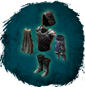
Око Богов (Лучник 100)
Экипировка / Комплекты
Открыть в интерактивной вики →
| Редкость | Сет |
|---|
Части комплекта
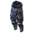
Седельные сумки Седельные сумки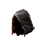
Корона Ястреба Корона Ястреба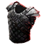
Броня Стрелка Броня Стрелка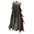
Камуфляж Камуфляж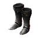
Кирсили КирсилиГде добыть
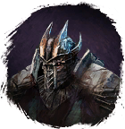
Страж Лугуса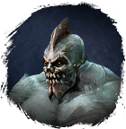
Кузнец Лугуса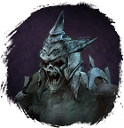
Астроном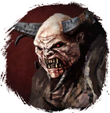
Гнавк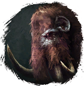
Мамонт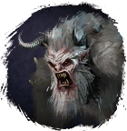
Йети-Добытчик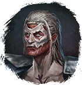
Пожиратель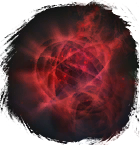
Висп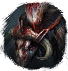
Як-Добытчик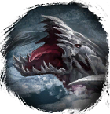
Великий Кукловод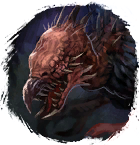
Кошмар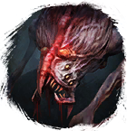
Кровосос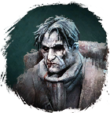
Путешественник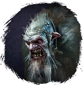
Зимний тролль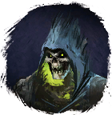
Олм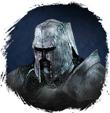
ХальменгирБонус комплекта
Шанс поглощения урона +10
Шанс двойной атаки +7
Шанс попадания дальней атакой +15
Дополнительные ОД +1
Обмануть Судьбу +1
Здоровье +250
Шанс двойной атаки +7
Шанс попадания дальней атакой +15
Дополнительные ОД +1
Обмануть Судьбу +1
Здоровье +250